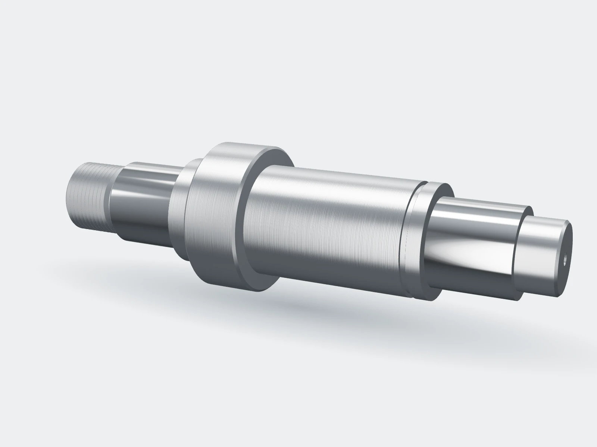

Obrábíme díly podle vašeho výkresu
CNC soustružení, frézování a broušení v Rousínově u Brna. Prototypy i série do 5 000 kusů z oceli, nerezu, hliníku a technických plastů.
Volná kapacita na soustruzích od 3. listopadu

Od roku 1996v Rousínově, 20 minut od Brna
34 lidíve výrobě na dvě směny
12 CNC strojůa klimatizovaná měrovna
ISO 9001certifikovaný systém kvality od roku 2008
Co u nás vyrobíte
Kusovku, prototypy i opakované série. Pošlete výkres nebo 3D model a technolog navrhne postup. Když najde tolerance, které díl zbytečně zdražují, řekne vám to dřív, než začneme.

Integrátor robotických pracovišť, Brno
Přípravky pro robotické svařování za tři týdny
Od 3D modelu po smontovaný přípravek. Upínací body jsme frézovali na pětiosém centru a změřili na měřicím stroji, takže robot po instalaci nemusel nic dorovnávat.
- Přesnost bodů
- ±0,02 mm
- Od modelu po montáž
- 3 týdny
Z dílny
Celá galerie


Rodinná firma ve druhé generaci
Jsme dost velcí na série a pořád dost malí na to, abychom se domluvili rychle. Technolog, který vaši zakázku nacení, ji pak připraví i do výroby.
Hledáme frézaře, seřizovače a svářeče. Zaučíme vás a výplatu máte vždy do 10. dne v měsíci.
Pošlete výkres, do 48 hodin máte nabídku
Cenu za kus, termín a případné návrhy, jak díl zlevnit. Výkresy podléhají mlčenlivosti.